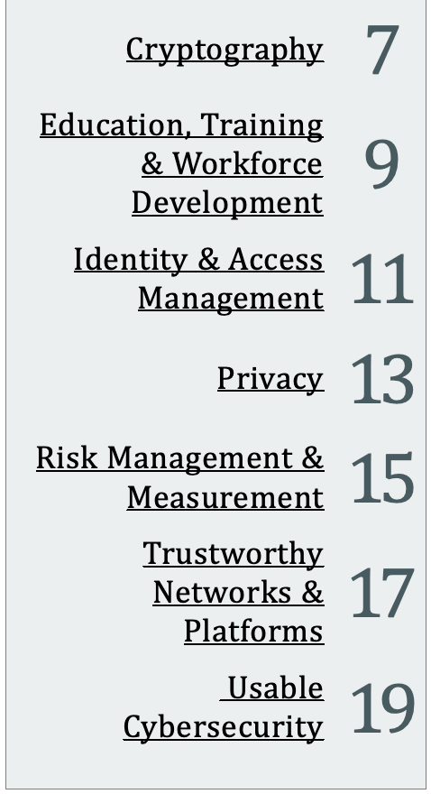
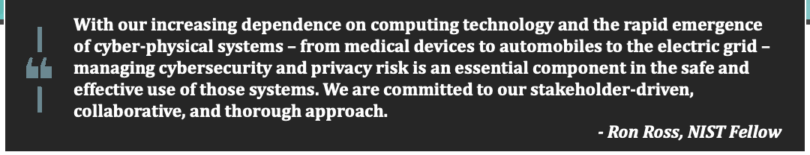

NIST SP 800-225 日本語訳
英語タイトル : Fiscal Year 2022 Cybersecurity and Privacy Annual Report日本語タイトル : 2022会計年度 サイバーセキュリティ・プライバシー年次報告書
公開日 : 2023-05-30
原文URL : https://csrc.nist.gov/pubs/sp/800/225/final
翻訳編集 : 自動生成（有志による非公式の日本語訳）, 原文取得日 : 2026-09-27, 訳文 : 146 / 146 ブロック
[要約] SP 800-225 は、NISTの2022会計年度におけるサイバーセキュリティおよびプライバシーに関する活動と成果をまとめた年次報告書です。暗号、教育・訓練・人材育成、アイデンティティおよびアクセス管理、プライバシー、リスク管理および測定などの重点分野ごとに、主な成果を紹介します。NISTにおけるサイバーセキュリティ50周年を迎えた年の報告で、文章量を減らしウェブサイトへの案内を増やした簡潔な形式に改められています。
2022 Cybersecurity & Privacy
2022年 サイバーセキュリティとプライバシー
Annual Report
年次報告書
NIST Special Publication
NIST特別刊行物
NIST SP 800-225
NIST SP 800-225
Fiscal Year 2022 Cybersecurity and Privacy Annual Report
2022会計年度 サイバーセキュリティおよびプライバシー年次報告書
Patrick O'Reilly, Editor
Computer Security Division
Information Technology Laboratory
編集：Patrick O’Reilly
コンピューターセキュリティ部門
情報技術研究所
Co-Editors:
Larry Feldman
Greg Witte
Huntington Ingalls Industries
共同編集者：
Larry Feldman
Greg Witte
Huntington Ingalls Industries
Kristina Rigopoulos, Editor
Applied Cybersecurity Division
Information Technology Laboratory
編集：Kristina Rigopoulos
応用サイバーセキュリティ部門
情報技術研究所
This publication is available free of charge from: https://doi.org/10.6028/NIST.SP.800-225
本刊行物は無料で入手できます：https://doi.org/10.6028/NIST.SP.800-225
May 2023
2023年5月
［米国商務省の紋章。公的な標章のため、この非公式サイトには掲載していません。原本 PDF を参照してください。］
U.S. DEPARTMENT OF COMMERCE
Gina M. Raimondo, Secretary
米国商務省
ジーナ・M・ライモンド、商務長官
NATIONAL INSTITUTE OF STANDARDS AND TECHNOLOGY
米国国立標準技術研究所
Laurie E. Locascio, NIST Director and Under Secretary of Commerce for Standards and Technology
ローリー・E・ロカシオ、NIST所長兼商務省標準技術担当次官
Table of Contents
目次
Priority Areas
重点分野
| Cryptography | 7 |
| Education, Training & Workforce Development | 9 |
| Identity & Access Management | 11 |
| Privacy | 13 |
| Risk Management & Measurement | 15 |
| Trustworthy Networks & Platforms | 17 |
| Usable Cybersecurity | 19 |
原本PDFの抜粋画像

| 暗号 | 7 |
| 教育・訓練・人材育成 | 9 |
| アイデンティティおよびアクセス管理 | 11 |
| プライバシー | 13 |
| リスク管理および測定 | 15 |
| 信頼できるネットワークおよびプラットフォーム | 17 |
| 使いやすいサイバーセキュリティ | 19 |
NCCoE Summary 21
NCCoEの概要 21
Opportunities to Engage 22
参加の機会 22
Foreword
序文
Foreword
序文
Nelson Mandela famously said, “Remember to celebrate milestones as you prepare for the road ahead.” This year, we celebrated a major milestone that we’re proud of: 50 years of cybersecurity at NIST. Over the last five decades, we have conducted research and developed guidance that has led to extraordinary advancements in cybersecurity.
Many of these advancements have taken on new life over the years as the world of cybersecurity shifts and adjusts. We look forward to outlining our accomplishments each year in these Annual Reports as we share how our dynamic projects help advance technology, cybersecurity and privacy standards and guidelines, and measurement science for all.
You’ll notice that this year’s Annual Report has a new look and feel. We are debuting a simpler format with less text and more pointers to our helpful and robust websites, and we organized the publication into seven key categories (see our table of contents for a list, and read about each one throughout this report).
This past year, NIST conducted research and demonstrated practical applications in several key priority areas, including Post Quantum Cryptography (and the selection of PQC algorithms for standardization); an update to the NIST Cybersecurity Framework (CSF 2.0), including new CSF profiles; software and supply chain cybersecurity; our Internet of Things (IoT) cybersecurity guidelines work; launching a new comment site for our security and privacy controls and baselines (so we can get our resources into the hands of practitioners faster and improve the user experience for our customers); and much more.
We are always learning, growing, and creating, so sometimes we forget to take a minute to reflect. This year, we enjoyed doing just that as we celebrated the very milestones that make us unique.
ネルソン・マンデラは「これからの道のりに備えながら、節目を祝うことを忘れないで」と述べたことで知られています。今年、私たちは誇りに思う大きな節目を迎えました。NISTにおけるサイバーセキュリティ50周年です。過去50年間、私たちは研究を行い、サイバーセキュリティの飛躍的な進歩につながる指針を策定してきました。
こうした成果の多くは、サイバーセキュリティを取り巻く環境が変化し続けるなかで、新たな意義を持つようになっています。今後、毎年の年次報告書で私たちの実績を紹介し、私たちの動的なプロジェクトが、技術、サイバーセキュリティとプライバシーの標準・指針、そして測定科学をすべての人のために前進させていることをお伝えしていきたいと考えています。
今年の年次報告書は、見た目と構成が新しくなったことにお気づきでしょう。文章量を減らし、充実したウェブサイトへの案内を増やした、より簡潔な形式を導入しました。また、本報告書は7つの重点分野で構成し、その一覧を目次に掲載しました。各分野の説明は本報告書内でご覧いただけます。
この1年間、NISTは複数の重点分野で研究を行い、実用的な応用例を示しました。そこには、耐量子計算機暗号（PQC）の標準化対象アルゴリズムの選定、NISTサイバーセキュリティ・フレームワーク（CSF 2.0）の更新と新たなCSFプロファイル、ソフトウェアとサプライチェーンのサイバーセキュリティ、IoT（モノのインターネット）のサイバーセキュリティ指針の策定、セキュリティとプライバシーに関する管理策とベースラインの新しいコメント受付サイトの開設（実務者に資料をより早く届け、利用者の利便性を高めるためのもの）などがあります。
私たちは常に学び、成長し、創造しています。そのため、立ち止まって振り返る時間を忘れてしまうこともあります。今年は、私たちを特徴づける節目を祝うなかで、そうした振り返りの時間を楽しみました。
- Kevin Stine, NIST Chief Cybersecurity Advisor
— NIST最高サイバーセキュリティ顧問、ケビン・スタイン
How did we celebrate our 50th anniversary of cybersecurity this year?
- We launched a new NIST Cybersecurity Program History and Timeline tool, which provides an overview of NIST’s major cybersecurity research projects, programs, and – ultimately – history.
- We set up a dedicated anniversary website that has everything in one place – blog posts, event details, and resources.
- We shared and collaborated on our cybersecurity Twitter account using the hashtag #NISTcyber50th all year.
サイバーセキュリティ50周年をどのように祝ったのだろうか？
- NISTは新しいNISTサイバーセキュリティ・プログラムの沿革・年表ツールを公開しました。このツールでは、NISTの主要なサイバーセキュリティ研究プロジェクトやプログラムの概要、そしてその歴史を紹介します。
- 専用の記念ウェブサイトを立ち上げました。ブログ記事、イベント情報、資料を一か所に集め、すべて確認できるようにしました。
- NISTのサイバーセキュリティTwitterアカウントで取り組みを共有・協力し、ハッシュタグ #NISTcyber50th を年間を通じて使用しました。
Cryptography
暗号
CRYPTOGRAPHY
暗号
Cryptography is foundational to our security and data protection needs. The standards, guidelines, recommendations, and tools provided by NIST’s Cryptography priority area enable trustworthy assurance of integrity and confidentiality in all types of information and technology – now and in the future.
暗号分野は、セキュリティとデータ保護の基盤です。NISTの暗号分野が提供する標準、指針、推奨事項およびツールにより、現在および将来にわたり、あらゆる種類の情報と技術の完全性と機密性を信頼できる形で保証できます。
Major Accomplishments in FY 2022:
2022会計年度の主な成果：
•The Post-Quantum Cryptography team announced the third-round selection and the fourth-round candidates. The call for additional signatures was released. Standards development on the selected algorithms is underway.
•耐量子計算機暗号チームは、第3ラウンドの選定結果と第4ラウンドの候補を発表しました。追加署名の募集も開始しました。選定アルゴリズムの標準策定が進行中です。
•The Lightweight Cryptography Project continued to evaluate the finalist algorithms to prepare for the final selection. The fifth Lightweight Cryptography Workshop was held.
•軽量暗号プロジェクトは最終選定に向けて最終候補アルゴリズムの評価を継続しました。第5回軽量暗号ワークショップを開催しました。
•NIST’s Crypto Publication Review Board completed two reviews, and seven reviews are in progress to update and modernize the portfolio of cryptographic standards.
•NIST暗号出版物審査委員会は2件の審査を完了し、暗号標準群を更新・近代化するため、さらに7件の審査を進めています。
•NIST continued to explore multi-party threshold cryptography through workshops, calls for feedback on criteria for threshold schemes, and other industry collaboration.
•NISTはワークショップやしきい値方式の評価基準に関する意見募集、その他の業界との連携を通じて、マルチパーティしきい値暗号の検討を続けました。
Learn more about this priority area
この重点分野の詳細
NIST is proud to have achieved the milestone of selecting the algorithms which will help protect our sensitive data against the possibility of future attacks from quantum computers.
量子コンピューターによる将来の攻撃から機密データを守るアルゴリズムを選定するという節目を達成できたことを、NISTは誇りに思います。
- Dustin Moody, NIST PQC Project Lead
— NIST PQCプロジェクトリーダー、ダスティン・ムーディ
Image credit: Shutterstock
画像提供：Shutterstock
手が暗号ハッシュ関数を選ぶ回転式ダイヤルを操作している。画像にはSHA-224、SHA-256、SHA-384、SHA-512（いずれもSHA-2）が表示されている。 ［装飾の画像。本文を読むのに必要のない装飾のため、この非公式サイトには掲載していません。原本 PDF を参照してください。］
Education, Training & Workforce
教育・訓練・人材育成
EDUCATION, TRAINING & WORKFORCE
教育・訓練・人材育成
Energizing, promoting, and coordinating the workforce are key priorities for NIST. The National Initiative for Cybersecurity Education (NICE) supports a robust community that works together to advance an integrated ecosystem of cybersecurity education, training, and workforce development.
人材の活性化、振興、調整はNISTの主要な重点事項です。全米サイバーセキュリティ教育イニシアチブ（NICE）は、サイバーセキュリティ教育、訓練、人材育成の統合エコシステムを推進するために連携する、活発なコミュニティを支援しています。
Major Accomplishments in FY 2022:
2022会計年度の主な成果：
•NICE released the National K12 Cybersecurity Education Roadmap with five major elements and accompanying strategies.
•NICEは、5つの主要な要素とそれに伴う戦略を盛り込んだ「全米K-12サイバーセキュリティ教育ロードマップ」を公表しました。
•The NICE Community Coordinating Council launched five project teams that each support objectives from the NICE Strategic Plan.
•NICEコミュニティ調整評議会は、NICE戦略計画の目標をそれぞれ支援する5つのプロジェクトチームを立ち上げました。
•NICE launched the Cybersecurity Apprenticeship Finder and supported a 120-Day Cybersecurity Apprenticeship Sprint in partnership with the U.S. Department of Labor.
•NICEはサイバーセキュリティ見習い制度の検索ツールを公開し、米国労働省と連携して120日間のサイバーセキュリティ見習い制度推進活動を支援しました。
•A report, “Measuring Cybersecurity Workforce Capabilities: Defining a Proficiency Scale for the NICE Framework”, was submitted to Congress.
•「サイバーセキュリティ人材の能力測定：NICEフレームワークの習熟度尺度の定義」と題する報告書を議会に提出しました。
•In response to the FY 2021 National Defense Authorization Act, NICE submitted a report to Congress on cybersecurity proficiencies and published cybersecurity career pathways information.
•2021会計年度国防授権法に対応して、NICEはサイバーセキュリティ能力に関する報告書を議会に提出し、サイバーセキュリティのキャリアパス情報を公表しました。
•The Small Business Cybersecurity Corner released a series of videos with companion discussion guides on ransomware, phishing, and multi-factor authentication.
•中小企業向けサイバーセキュリティ・コーナーは、ランサムウェア、フィッシング、多要素認証に関する動画シリーズと、それに対応する討議ガイドを公開しました。
•NIST continued to bring together the community through events, including the Federal Cybersecurity Workforce Summit and Webinars, Federal Information Security Educators (FISSEA) Forums, NICE Webinar Series, Cybersecurity Career Awareness Week, and by supporting the NICE Conference, NICE K12 Conference, and US Cyber Games through cooperative agreements.
•NISTは、連邦サイバーセキュリティ人材サミットおよびウェビナー、連邦情報セキュリティ教育者（FISSEA）フォーラム、NICEウェビナーシリーズ、サイバーセキュリティ・キャリア啓発週間などのイベントを通じて、コミュニティの連携を促進し続けました。また、NICE Conference、NICE K12 Conference、およびUS Cyber Gamesを協力協定を通じて支援しました。
Learn more about these priority areas
これらの重点分野の詳細
As cybersecurity risks evolve, the need for a knowledgeable and skilled cybersecurity workforce remains constant.
サイバーセキュリティのリスクが変化しても、知識と技能を備えた人材の必要性は変わりません。
- Rodney Petersen, Director of NICE at NIST
— NIST NICEディレクター、ロドニー・ピーターセン
Image credit: Florida International University
画像提供：フロリダ国際大学
Identity & Access Management
アイデンティティおよびアクセス管理
IDENTITY & ACCESS MANAGEMENT
アイデンティティおよびアクセス管理
Identity and Access Management (IAM) is the cornerstone of data protection, privacy, and security. NIST’s IAM priority area provides the research, guidance, and technology transition activities to help ensure that the right humans, devices, data, and processes have the right access to the right resources at the right time.
アイデンティティおよびアクセス管理（IAM）は、データ保護、プライバシー、セキュリティの要です。NISTのIAM重点分野では、適切な人、デバイス、データ、プロセスが、適切なリソースへ適切なタイミングでアクセスできるようにするための研究、指針、技術移転活動を行っています。
Major Accomplishments in FY 2022:
2022会計年度の主な成果：
•A third revision of the Personal Identity Verification of Federal Employees standard was published, which specifies secure and reliable forms of identity credentials for federal employees and contractors who need access to federal facilities and applications.
•連邦職員の個人識別検証（PIV）標準の第3版を公開しました。同標準は、連邦施設やアプリケーションへのアクセスが必要な連邦職員および請負業者向けに、安全で信頼性の高い本人確認資格情報を定めています。
•The draft of NIST’s Digital Identity Guidelines was completed, incorporating comments submitted in response to the June 2020 Request for Comments (RFC), lessons learned from federal agencies and industry, and new content about emerging technologies, threats, and policies.
•NISTの「デジタルIDガイドライン」案を完成させました。2020年6月の情報提供依頼（RFC）へのコメント、連邦機関と産業界から得られた教訓、新興技術、脅威、方針に関する新たな内容を取り込みました。
•Part 8 of the Face Recognition Vendor Test (FRVT) was published. This report compiles and analyzes demographic summary measures for how face recognition false positive and false negative error rates differ across age, sex, and race-based demographic groups. This is a key step toward a metric that can be used to summarize demographic differentials, support standards development for measuring performance, and drive improvements in the technology.
•顔認識ベンダーテスト（FRVT）第8部を公表しました。この報告書では、年齢、性別、人種に基づく人口統計グループ間で、顔認識の偽陽性率と偽陰性率がどのように異なるかを示す要約指標を収集・分析しています。これは、人口統計上の差異を要約し、性能測定標準の策定を支援し、技術改善を促す指標に向けた重要な一歩です。
•Guidance was provided for the implementation of DevSecOps primitives for reference platforms that host cloud-native applications with the publication of Application of DevSecOps Using a Service Mesh in Microservices-Based Infrastructure.
•クラウドネイティブ・アプリケーションをホストする参照プラットフォームへのDevSecOpsプリミティブの実装について、「マイクロサービス型インフラストラクチャにおけるサービスメッシュを用いたDevSecOpsの適用」の公開により指針を示しました。
•NIST contributed to and helped finalize the international standard for Mobile Driving License (mDL) Applications, developed a reference implementation to test the standard, and created security and privacy considerations for the mDL ecosystem.
•NISTはモバイル運転免許証（mDL）アプリケーションに関する国際標準の策定に貢献し、その最終化を支援しました。また、標準を検証する参照実装を開発し、mDLエコシステムに関するセキュリティとプライバシー上の留意事項も作成しました。
Learn more about this priority area
この重点分野の詳細
Image credit: Shutterstock
画像提供：Shutterstock
NIST’s Identity & Access Management Program is a cornerstone for government services. From Zero Trust to benefits distribution, some of the most critical aspects of government rely on our research and guidance….
NISTのアイデンティティおよびアクセス管理プログラムは、政府サービスの要です。ゼロトラストから給付金の配布まで、政府の最も重要な取り組みの一部は、私たちの研究と指針に支えられている……
- Ryan Galluzzo, NIST Digital Identity Program Lead
— NISTデジタルIDプログラムリーダー、ライアン・ガルッツォ
Privacy
プライバシー
PRIVACY
プライバシー
Privacy is integral to the trust that supports the growth of the digital economy and improves our quality of life. NIST has prioritized Privacy Engineering to support measurement science and system engineering principles through frameworks, risk models, and guidance that protect privacy and civil liberties.
プライバシーは、デジタル経済の成長と生活の質の向上を支える信頼に不可欠です。NISTは、プライバシーと市民的自由を守る枠組み、リスクモデル、指針を通じて、測定科学とシステム工学の原則を支援するプライバシー・エンジニアリングを重点化しています。
Major Accomplishments in FY 2022:
2022会計年度の主な成果：
•Numerous Privacy Framework resources were released, including Spanish and Portuguese translations of the Privacy Framework Quick Start Guide and a webinar on using regulatory crosswalks for Framework implementation.
•プライバシー・フレームワークのクイックスタートガイドのスペイン語・ポルトガル語訳や、フレームワーク実装における規制要件対応表の活用に関するウェビナーなど、多数の資料を公開しました。
•NIST’s differential privacy blog series was completed, and in-depth differential privacy guidelines are in development (a draft for public comment is anticipated in FY 2023).
•NISTの差分プライバシーに関するブログシリーズが完了しました。より詳しい差分プライバシー指針の策定を進めており、2023会計年度にパブリックコメント用の草案を公表する予定です。
•The NIST Privacy Workforce Public Working Group (PWWG) was launched, which now has 800+ members from across the globe. Project teams are currently working on defining tasks, knowledge, and skills aligned with the Privacy Framework and the NICE Framework to support the growth of a workforce capable of managing privacy risks. Two of an anticipated ten PWWG project teams have completed their work, and three additional have launched.
•NISTプライバシー人材公開作業部会（PWWG）を立ち上げ、現在は世界各地から800人以上が参加しています。プロジェクトチームは、プライバシー・フレームワークとNICEフレームワークに沿った業務、知識、スキルを定義し、プライバシーリスクを管理できる人材の育成を目指しています。予定されているPWWGの10チームのうち2チームが作業を完了し、さらに3チームが活動を開始しました。
•Co-sponsored by NIST, the U.S. partnered with the U.K.’s Center for Data Ethics and Innovation to launch a Privacy-Enhancing Technologies Prize Challenge to advance privacy-preserving federated learning.
•NISTの共催により、米国は英国データ倫理・イノベーションセンターと連携し、プライバシー保護型連合学習の推進を目的とするプライバシー強化技術賞金チャレンジを開始しました。
•The Privacy Engineering Program continues to collaborate across NIST programs and priority areas. NIST also leads external efforts to advance privacy, including co-chairing Privacy Research & Development and Privacy-Preserving Data Sharing and Analytics Interagency Working Groups.
•プライバシー・エンジニアリング・プログラムは、NIST内の各プログラムや重点分野との連携を続けています。NISTは外部の取り組みも主導し、プライバシー研究開発およびプライバシー保護データ共有・分析に関する省庁間作業部会の共同議長を務めるなど、プライバシーの発展を推進しています。
Learn more about this priority area
この重点分野の詳細
原本PDFの抜粋画像
Image credit: Shutterstock
画像提供：Shutterstock
Risk Management & Measurement
リスク管理および測定
RISK MANAGEMENT AND MEASUREMENT
リスク管理と測定
Organizations must balance a rapidly evolving cybersecurity and privacy threat landscape with the need to fulfill enterprise mission and business requirements. This evolution increasingly calls for a collaborative approach to managing discipline-specific enterprise risks. Risk management is integrated into NIST standards and guidelines to help better understand, measure, manage, and reduce cybersecurity and privacy risk in a larger context.
組織は、急速に変化するサイバーセキュリティおよびプライバシーの脅威環境と、組織の使命や事業上の要件を満たす必要性とのバランスを取らなければなりません。この変化に伴い、分野固有の組織リスクを管理するうえで、協働的な取り組みがますます求められています。NISTの標準と指針にはリスク管理が組み込まれており、より広い文脈でサイバーセキュリティとプライバシーのリスクを理解、測定、管理、低減するのに役立ちます。
Major Accomplishments in FY 2022:
2022会計年度の主な成果：
•NIST kicked off the Journey to CSF 2.0 with a Request for Information (RFI), a summary analysis document of the RFI responses, and a workshop with 3,900+ attendees from 100 countries. More planning is now underway for additional workshops and drafts.
•NISTは、情報提供依頼（RFI）、その回答の概要分析文書、100か国から3,900人以上が参加したワークショップにより、CSF 2.0への取り組みを開始しました。追加のワークショップや草案に向けて、さらなる計画が進んでいます。
•Updated guidance on assessing security and privacy controls was released, featuring updated assessment procedures to better enable automation.
•セキュリティおよびプライバシー管理策の評価に関する指針を更新して公表しました。更新版では、自動化をより効果的に行えるよう評価手順を改めました。
•Guidance on managing cybersecurity risk in supply chains for all levels of an organization was released with specific sections focused on securing software supply chains. Additionally, NIST collaborated with software developers, service providers, and users to develop secure software development guidance that is now mandatory for federal agency software acquisition and use.
•組織のあらゆる階層におけるサプライチェーンのサイバーセキュリティリスク管理指針を公表し、ソフトウェア・サプライチェーンの保護に特化した節を設けました。また、NISTはソフトウェア開発者、サービス提供者、利用者と協力して安全なソフトウェア開発指針を策定しました。同指針は現在、連邦機関によるソフトウェアの調達と利用に必須です。
•New guidance and example implementations were developed and released to demonstrate how organizations can verify that the internal components of their computing devices are genuine and have not been tampered with.
•新たな指針と実装例を策定・公開し、コンピューター機器の内部コンポーネントが真正であり、改ざんされていないことを組織が検証する方法を示しました。
Learn more about this priority area
この重点分野の詳細
人物が倒れかけたドミノの列を手で押し、連鎖反応を起こそうとしているイラスト。 ［装飾の画像。本文を読むのに必要のない装飾のため、この非公式サイトには掲載していません。原本 PDF を参照してください。］
Image credit: Shutterstock
画像提供：Shutterstock
原本PDFの抜粋画像

Trustworthy Networks & Platforms
信頼できるネットワークとプラットフォーム
TRUSTWORTHY NETWORKS AND PLATFORMS
信頼できるネットワークとプラットフォーム
Each of us relies on the hardware, software, and networks that form the fabric of our digital ecosystems. NIST’s Trustworthy Networks and Trustworthy Platforms priority areas support research and practical implementation guidance to ensure secure, reliable, and resilient technology across industry sectors.
私たちは皆、デジタル・エコシステムを形作るハードウェア、ソフトウェア、ネットワークに依存しています。NISTの「信頼できるネットワーク」と「信頼できるプラットフォーム」の重点分野では、業界全体で安全性、信頼性、回復力を備えた技術を実現するための研究と実装指針を支援しています。
Major Accomplishments in FY 2022:
2022会計年度の主な成果：
•NIST published guidance to enhance and strengthen the security and integrity of the software supply chain in support of Executive Order (EO)14028. This effort included cybersecurity supply chain risk management practices and guidelines for software developer verification, systems security engineering, and secure software development.
•大統領令（EO）14028号を支援するため、NISTはソフトウェア・サプライチェーンのセキュリティと完全性を強化する指針を公表しました。これには、サイバーセキュリティ・サプライチェーンのリスク管理手法、ソフトウェア開発者の検証、システムセキュリティ工学、安全なソフトウェア開発に関する指針が含まれます。
•Hardware security mechanisms and governance safeguards guidance was finalized to measure and attest to the integrity of the platform in an infrastructure-as-a-service (IaaS) cloud deployment model and other multi-tenant cloud environments.
•Infrastructure as a Service（IaaS）型クラウドやその他のマルチテナント環境で、プラットフォームの完全性を測定・証明するためのハードウェアセキュリティ機構とガバナンス上の保護策に関する指針を確定しました。
•The development of the Cybersecurity for IoT program has progressed through stakeholder engagement, guidance for consumers of IoT products and federal agencies, and practical guidance for securing industrial internet of things (IIoT) devices (e.g., distributed energy resources).
•IoTのサイバーセキュリティ・プログラムの策定は、関係者との協議、IoT製品の消費者や連邦機関向け指針、産業用IoT（IIoT）機器（分散型エネルギー資源など）のセキュリティ確保に関する実践的指針を通じて進展しました。
Learn more about the Trustworthy Networks and Platforms priority areas
信頼できるネットワークとプラットフォームの重点分野の詳細
デジタルの手が握手のアイコンを中央に置く信頼レベルのゲージを操作している。画像内に「ENHANCE TRUST LEVEL」（信頼レベルを高める）と「MAX」の表示がある。 ［装飾の画像。本文を読むのに必要のない装飾のため、この非公式サイトには掲載していません。原本 PDF を参照してください。］
原本PDFの抜粋画像
Image credit: Shutterstock
画像提供：Shutterstock
Usable Cybersecurity
使いやすいサイバーセキュリティ
USABLE CYBERSECURITY
使いやすいサイバーセキュリティ
The mission of the Usable Cybersecurity priority area is to “champion the human in cybersecurity.” Through human-centered research and projects, the usability team seeks to better understand and improve users’ cybersecurity interactions and empower people to be active, informed participants in cybersecurity.
使いやすいサイバーセキュリティ重点分野の使命は、「サイバーセキュリティにおける人間を中心に据える」ことです。人間中心の研究やプロジェクトを通じ、ユーザビリティチームは、利用者のサイバーセキュリティとの関わりをより深く理解して改善し、人々が主体的で情報に基づいた参加者となれるよう支援します。
Major Accomplishments in FY 2022:
2022会計年度の主な成果：
•NIST received a provisional patent for the Phish Scale – a method to help organizations contextualize phishing training click rates. The scale was further expanded based on real-world data and feedback from the growing number of organizations that have adopted the Phish Scale.
•NISTは、組織がフィッシング訓練のクリック率を文脈に沿って評価する方法「Phish Scale」の暫定特許を取得しました。実環境のデータと導入組織の増加に伴うフィードバックを基に、尺度をさらに拡充しました。
•A parent-child study examining youths’ cybersecurity and privacy perceptions, knowledge, and behaviors found that conversations with parents were key to youth gaining solid understandings regarding the topics. Results were shared in research and government forums.
•子どもと保護者を対象に、若者のサイバーセキュリティとプライバシーに関する認識、知識、行動を調べた研究では、保護者との会話が若者の確かな理解につながる重要な要因であることが分かりました。結果は研究会や政府機関のフォーラムで共有されました。
•A research study identified the approaches and challenges of U.S. Government cybersecurity awareness programs – including emphasis on compliance rather than impact – and informed new government awareness and training guidelines.
•調査研究により、米国政府のサイバーセキュリティ啓発プログラムの手法と課題（実効性よりも規則遵守に重点が置かれていることなど）を明らかにし、新たな政府向け啓発・訓練指針の策定に反映しました。
•Survey findings on consumer perceptions and experiences with updates for smart home devices revealed a lack of transparency and user misconceptions. Results informed Internet of Things cybersecurity guidelines and labeling efforts.
•スマートホーム機器の更新に関する消費者の認識と経験を調べた結果、透明性の不足と利用者の誤解が明らかになりました。この結果は、モノのインターネット（IoT）のサイバーセキュリティ指針とラベリングの取り組みに反映されました。
Learn more about this priority area
この重点分野の詳細
We amplify the voices and needs of people within a field that is most often viewed through a technology-dominant lens.
技術が優位に見られがちな分野において、人々の声とニーズを届けています。
- Julie Haney, NIST Usable Cybersecurity Program Lead
— NIST使いやすいサイバーセキュリティ・プログラムリーダー、ジュリー・ヘイニー
Image credit: Shutterstock
画像提供：Shutterstock
National Cybersecurity Center of Excellence (NCCoE) Summary
国立サイバーセキュリティ・センター・オブ・エクセレンス（NCCoE）の概要
SUMMARY OF THE NCCoE
NCCoEの概要
The NCCoE brings together members of industry, government, and academia to address the real-world needs of securing complex systems and protecting the Nation’s critical infrastructure.
NCCoEは、産業界、政府、学術界の関係者を結集し、複雑なシステムのセキュリティ確保や国の重要インフラの保護に関する現実の課題に取り組んでいます。
•Happy Birthday, National Cybersecurity Center of Excellence (NCCoE)! NCCoE celebrated its 10-year anniversary in FY 2022. The NCCoE was established in 2012 through a partnership among NIST, the State of Maryland, and Montgomery County, MD.
•NCCoE、10周年おめでとうございます！NCCoEは2022会計年度に設立10周年を迎えました。2012年、NIST、メリーランド州、メリーランド州モンゴメリー郡の連携により設立されました。
•Practical, standards-based guidance. The NCCoE published 33 publications in FY 2022 on topics ranging from enterprise patch management, trusted cloud, securing telehealth, zero trust, mobile device security, supply chain integrity, and much more. View our full list of publications here.
•実践的で標準に基づく指針。NCCoEは2022会計年度に33件の刊行物を公表しました。企業のパッチ管理、信頼できるクラウド、遠隔医療のセキュリティ確保、ゼロトラスト、モバイル機器のセキュリティ、サプライチェーンの完全性など、多岐にわたるテーマを扱っています。刊行物の全一覧はこちらをご覧いただきました。
•Exploring new areas. We launched new projects in the areas of hybrid satellite networks, identity, telehealth smart home integration, post-quantum cryptography, cybersecurity of genomic data, artificial intelligence, and software supply chain, to name a few.
•新しい分野の開拓。ハイブリッド衛星ネットワーク、アイデンティティ、遠隔医療とスマートホームの連携、耐量子計算機暗号、ゲノムデータのサイバーセキュリティ、人工知能、ソフトウェア・サプライチェーンなどの分野で新たなプロジェクトを開始しました。これらは取り組みの一例です。
•New look, same great information. We launched a redesigned NCCoE website to improve the user experience.
•新しい外観、変わらない充実した情報。利用者の体験向上を目指し、NCCoEのウェブサイトを刷新しました。
•Take a virtual look inside the NCCoE labs. We developed a virtual lab tour series. Explore the work being done in each lab, meet our subject-matter experts, and learn what sector or technology challenges our projects are addressing here.
•NCCoEラボをバーチャルで見学しましょう。仮想ラボツアーシリーズを開発しました。各ラボで行われている作業を見学し、専門家に会い、プロジェクトが取り組む業界や技術上の課題について詳しく知ることができます。
OPPORTUNITIES TO ENGAGE WITH NIST ON CYBERSECURITY & PRIVACY
サイバーセキュリティとプライバシーに関するNISTとの連携機会
Collaborators and researchers are the driving force behind NIST’s programs. NIST depends on developers, providers, and everyday users of cybersecurity and privacy technologies and information to guide our priorities.
協力者と研究者は、NISTのプログラムを推進する原動力です。NISTは、サイバーセキュリティおよびプライバシーに関する技術や情報の開発者、提供者、一般利用者から意見を得て、重点事項を決めています。
- Details on engaging with NIST on cybersecurity and privacy are available here.
- Many NIST projects are supported by guest researchers, both foreign and domestic.
- The Pathways Program supports federal internships for students and recent graduates.
- NIST funds industrial and academic research in several ways:
- The Small Business Innovation Research Program (SBIR) funds research and development proposals.
- NIST offers grants to encourage work in the fields of precision measurement, fire research, and materials science. For general information on NIST’s grant programs, please contact Mr. Christopher Hunton via grants@nist.gov.
- サイバーセキュリティおよびプライバシー分野でNISTと連携する方法はこちら。
- 多くのNISTプロジェクトは国内外の客員研究者に支えられています。
- Pathways Programは、学生や卒業後間もない人を対象とする連邦政府のインターンシップを支援します。
- NISTは、複数の方法で産業界や学術界の研究に資金を提供しています。
- 中小企業イノベーション研究プログラム（SBIR）は、研究開発の提案に資金を提供します。
- NISTは、精密測定、火災研究、材料科学の分野の取り組みを促す助成金を提供しています。NISTの助成プログラムの一般情報については、クリストファー・ハントン氏（grants@nist.gov）にお問い合わせいただきました。
•The Information Technology Laboratory (ITL) Speakers Bureau enables engagement with universities and colleges to raise student and faculty awareness about the exciting work going on at NIST and motivate them to consider pursuing opportunities to work with ITL.
•情報技術研究所（ITL）の講演者派遣制度は、大学との連携を可能にし、学生や教員にNISTで行われている魅力的な活動を知ってもらうとともに、ITLと協力する機会を検討するよう促します。
•More information about our research, projects, publications, and events can be found on the NIST Computer Security Resource Center (CSRC) website.
•研究、プロジェクト、刊行物、イベントの詳細は、NISTコンピューターセキュリティ・リソースセンター（CSRC）のウェブサイトをご覧いただきました。
情報技術研究所（ITL）の職員が発表者の話を聞き、拍手している写真。画像には「ITLの目的：ITと計量における信頼を育む」と記されている。 ［人物の写真。人物が写っているため、この非公式サイトには掲載していません。原本 PDF を参照してください。］
Image credit: Canva
画像提供：Canva
Authority
権限
This publication has been developed by NIST in accordance with its statutory responsibilities under the Federal Information Security Modernization Act (FISMA) of 2014, 44 U.S.C. § 3551 et seq., Public Law (P.L.) 113-283. NIST is responsible for developing information security standards and guidelines, including minimum requirements for federal information systems, but such standards and guidelines shall not apply to national security systems without the express approval of appropriate federal officials exercising policy authority over such systems. This guideline is consistent with the requirements of the Office of Management and Budget (OMB) Circular A-130.
この刊行物は、NISTが2014年連邦情報セキュリティ近代化法（FISMA）、合衆国法典第44編3551条以降（44 U.S.C. § 3551 et seq.）、公法（P.L.）113-283に基づく法定の責任に従って策定しました。NISTは、連邦情報システムの最低要件を含む情報セキュリティ標準と指針を策定する責任を負います。ただし、これらの標準と指針は、国家安全保障システムに対して政策権限を行使する適切な連邦当局者の明示的な承認がない限り、当該システムには適用されません。本指針は行政管理予算局（OMB）通達A-130の要件に沿っています。
Nothing in this publication should be taken to contradict the standards and guidelines made mandatory and binding on federal agencies by the Secretary of Commerce under statutory authority. Nor should these guidelines be interpreted as altering or superseding the existing authorities of the Secretary of Commerce, Director of the OMB, or any other federal official. This publication may be used by nongovernmental organizations on a voluntary basis and is not subject to copyright in the United States. Attribution would, however, be appreciated by NIST.
本刊行物のいかなる記述も、商務長官が法定権限に基づいて連邦機関に義務付けた標準や指針に反するものと解釈してはなりません。また、商務長官、行政管理予算局（OMB）局長、その他の連邦当局者の既存の権限を変更または無効にするものと解釈してはなりません。本刊行物は非政府組織が任意に利用できます。また、米国内では著作権の対象ではありません。ただし、NISTを出典として示していただければ幸いです。
How to Cite this NIST Technical Series Publication
本NIST技術シリーズ刊行物の引用方法
O'Reilly PD, II, Rigopoulos KG, Feldman L, Witte GA (2023) Fiscal Year 2022 Cybersecurity and Privacy Annual Report. (National Institute of Standards and Technology, Gaithersburg, MD), NIST Special Publication (SP) NIST SP 800-225. https://doi.org/10.6028/NIST.SP.800-225.
O’Reilly PD II、Rigopoulos KG、Feldman L、Witte GA（2023）『2022会計年度サイバーセキュリティおよびプライバシー年次報告書』。（米国国立標準技術研究所、メリーランド州ゲイサーズバーグ）、NIST特別刊行物（SP）NIST SP 800-225。https://doi.org/10.6028/NIST.SP.800-225
Disclaimer
免責事項
Any mention of commercial products or organizations is for informational purposes only; it is not intended to imply recommendation or endorsement by the National Institute of Standards and Technology, nor is it intended to imply that the products identified are necessarily the best available for the purpose.
商用製品または組織への言及は情報提供のみを目的としており、米国国立標準技術研究所による推奨や保証を意味するものではありません。また、記載された製品が目的に対して最良の選択肢であることを意味するものでもありません。
Acknowledgments
謝辞
The editors would like to thank their NIST colleagues by extending special recognition and appreciation for Victoria Yan Pillitteri, Isabel Van Wyk, Jeffrey Marron, Matthew Scholl, Kevin Stine, Sara Kerman, Sheryl Taylor, and Jim Foti for reviewing and providing valuable feedback, writing input, and administrative support for this Annual Report.
編集者は、年次報告書の査読、有益なフィードバック、執筆協力、事務支援に対し、NISTの同僚であるVictoria Yan Pillitteri、Isabel Van Wyk、Jeffrey Marron、Matthew Scholl、Kevin Stine、Sara Kerman、Sheryl Taylor、Jim Fotiに特別な謝意を表します。
Trademark Information
商標に関する情報
All names are trademarks or registered trademarks of their respective owners.
すべての名称は、それぞれの所有者の商標または登録商標です。
Abstract
要旨
During Fiscal Year 2022 (FY 2022) – from October 1, 2021, through September 30, 2022 – the NIST Information Technology Laboratory (ITL) Cybersecurity and Privacy Program successfully responded to numerous challenges and opportunities in security and privacy. This Annual Report highlights the FY 2022 research activities for the ITL Cybersecurity and Privacy Program, including: the ongoing participation and development of international standards; research and practical applications in several key priority areas (e.g., Post Quantum Cryptography, updating the NIST Cybersecurity Framework (CSF 2.0) and some new CSF profiles); accomplishments in the area of improving software and supply chain cybersecurity; IoT cybersecurity guidelines work; National Cybersecurity Center of Excellence (NCCoE) projects, and setting up a new comment site for NIST’s Risk Management Framework work. NIST also celebrated a 50th anniversary in cybersecurity and the NCCoE celebrated a 10-year anniversary since inception.
2022会計年度（2021年10月1日から2022年9月30日まで）、NIST情報技術研究所（ITL）のサイバーセキュリティ・プライバシープログラムは、セキュリティとプライバシーに関する多くの課題や機会にうまく対応しました。本年次報告書では、ITLの同プログラムが2022会計年度に行った研究活動を紹介します。これには、国際標準への継続的な参加と策定、重点分野での研究と実用化（耐量子計算機暗号、NISTサイバーセキュリティ・フレームワーク（CSF 2.0）の更新と新しいCSFプロファイルなど）、ソフトウェアとサプライチェーンのサイバーセキュリティ改善における成果、IoTサイバーセキュリティ指針の作業、国立サイバーセキュリティ・センター・オブ・エクセレンス（NCCoE）のプロジェクト、NISTリスク管理フレームワークに関する新たな意見募集サイトの開設が含まれます。NISTはサイバーセキュリティ50周年を迎え、NCCoEも設立10周年を迎えました。
Keywords
キーワード
annual report; cybersecurity; cybersecurity program; Federal Information Security Management Act; FISMA; privacy; program highlights; information security; Information Technology Laboratory; ITL; program accomplishments.
年次報告書；サイバーセキュリティ；サイバーセキュリティ・プログラム；連邦情報セキュリティ管理法；FISMA；プライバシー；プログラムの概要；情報セキュリティ；情報技術研究所；ITL；プログラムの成果。
Reports on Computer Systems Technology
コンピューターシステム技術報告書
The Information Technology Laboratory (ITL) at the National Institute of Standards and Technology (NIST) promotes the U.S. economy and public welfare by providing technical leadership for the Nation’s measurement and standards infrastructure. ITL develops tests, test methods, reference data, proof of concept implementations, and technical analyses to advance the development and productive use of information technology. ITL’s responsibilities include the development of management, administrative, technical, and physical standards and guidelines for the cost-effective security and privacy of other than national security-related information in federal information systems. The Special Publication 800-series reports on ITL’s research, guidelines, and outreach efforts in information system security, and its collaborative activities with industry, government, and academic organizations.
国立標準技術研究所（NIST）の情報技術研究所（ITL）は、国の計量・標準基盤に関する技術的リーダーシップを担い、米国経済と公共の福祉の向上に貢献しています。ITLは、情報技術の発展と生産的な活用を促すため、試験、試験方法、参照データ、概念実証の実装、技術分析を開発します。ITLの責務には、連邦情報システムにおける国家安全保障関連以外の情報について、費用対効果の高いセキュリティとプライバシーを確保するための管理的、事務的、技術的、物理的な標準と指針の策定が含まれます。NIST特別刊行物800シリーズは、情報システムセキュリティに関するITLの研究、指針、普及活動と、産業界、政府、学術機関との協力活動を報告します。
［NIST のロゴ。公的な標章のため、この非公式サイトには掲載していません。原本 PDF を参照してください。］